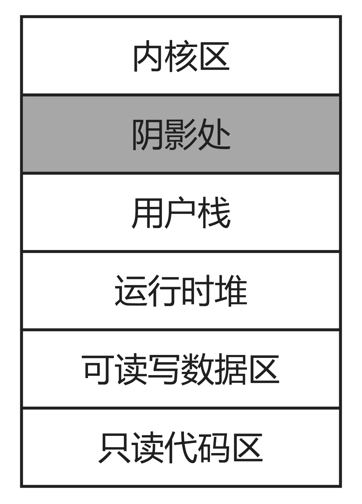

操作系统
2025-46
操作系统的运行环境进程与线程简介内存管理概念I/O管理概述设备独立性软件某进程的虚拟地址空间如下图所示，阴影部分为未占用区域。

另有 C 程序代码：
char *ptr;
void main()
{
int length;
ptr = (char *)malloc(sizeof(char));
scanf("%s", ptr);
length = strlen(ptr);
printf("length=%d\n", length);
free(ptr);
}请回答下列问题，并说明理由：
- 上述程序执行时，其进程控制块位于哪个区域？执行 scanf() 等待键盘输入时，该进程处于什么状态？
- main() 函数的代码位于哪个区域？其直接调用的哪些函数的功能需要通过执行驱动程序实现？
- 变量 ptr 被分配在哪个区域？若变量 length 没有被分配在寄存器中，则会被分配在哪个区域？ptr 指向的字符串位于哪个区域？
答案
46
（1）PCB 位于操作系统内核区；进程执行 scanf() 等待键盘输入时处于阻塞态。
（2）main() 函数的代码位于只读代码区。其直接调用的函数中，scanf() 需要键盘/终端驱动程序，printf() 需要显示/终端驱动程序。
（3）全局变量 ptr 位于可读/写数据段；局部变量 length 若未分配在寄存器中，则位于用户栈；ptr 指向的字符串位于运行时堆。
本题讲解：虚拟地址空间布局与 C 程序各成分的归属
第一步：记牢虚拟地址空间的分区
自上而下（题图布局）：操作系统内核区 → 只读代码区（代码段）→ 可读写数据区（数据段）→ 运行时堆（向高地址增长）→ 未占用阴影 → 用户栈（向低地址增长）。判断归属先问三件事：属于内核还是用户？生命周期是常驻还是临时？是否需要可写？
第二步：第（1）问——PCB 与进程状态
- PCB 位于操作系统内核区：PCB 是内核管理进程的数据结构，只能由内核创建和修改，必须放在用户态不可访问的受保护内核区。
- 执行 scanf() 等待键盘输入时，进程处于阻塞态：键盘 I/O 事件未到来，进程即使获得 CPU 也无法继续推进，只能等待 I/O 完成，于是主动放弃 CPU 进入阻塞态。
第三步：第（2）问——main() 代码与需要驱动程序的函数
- main() 函数的代码位于只读代码区：代码段只读、不可写。
- main 直接调用的函数：malloc、scanf、strlen、printf、free。其中需要通过执行驱动程序实现功能的是真正涉及设备 I/O 的两个：scanf()（需要键盘/终端输入驱动程序）和 printf()（需要显示器/终端输出驱动程序）。malloc/free 只做内存管理，strlen 是纯计算，都不涉及设备驱动。
第四步：第（3）问——三个变量的归属
- ptr：函数外定义的全局变量 → 可读写数据段。
- length：main 内的局部变量，若未分配在寄存器中 → 用户栈（随栈帧分配）。
- ptr 指向的字符串：malloc 动态分配 → 运行时堆。
易错点
- 把 PCB 放进用户区：PCB 对用户透明、受内核保护，绝不在用户地址空间里。
- 漏掉 printf：输出到显示器同样是设备 I/O，同样要驱动程序；malloc/free/strlen 则不需要。
- 把 malloc 的空间当栈：malloc 来自运行时堆，与局部变量所在的用户栈是两个区域。
一句话结论：PCB→内核区；scanf 时阻塞态；main→只读代码区，scanf/printf 需驱动；ptr→读写数据段，length→用户栈，字符串→堆。